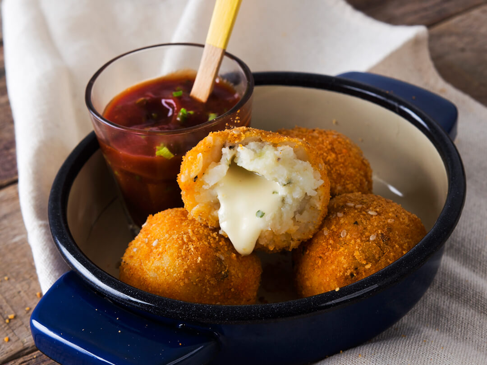

BOMBA DE PAPA
Soy Valen con una nueva receta fácil, sencilla y exquisita ideal para cualquier día
Ingredientes:
- Para el puré:
- 1 kg de papas
- Sal al gusto
- Pimienta (opcional)
- 1 cucharada de mantequilla
- 1 huevo (opcional, para dar consistencia)
- Pan rallado (para rebozar)
- Para el relleno (puedes variarlo):
- 250 g de carne molida (res, pollo o mixta)
- 1/2 cebolla picada
- 1 diente de ajo picado
- 1/2 pimiento morrón picado (opcional)
- Sal, pimienta, comino al gusto
- Aceite para freír
- Perejil o cilantro picado (opcional)
Preparación :
- Hacer puré: Herví las papas con sal, hacé puré y agregá mantequilla (y huevo si querés más firmeza). Dejá enfriar.
- Preparar el relleno: Sofreí cebolla, ajo y pimiento; agregá carne molida y condimentos. Cociná y dejá enfriar.
- Armar las bombas: Tomá puré, rellenalo con carne y formá una bola.
- Empanar: Pasalas por pan rallado (y huevo si querés doble capa).
- Freír: Dorá las bombas en aceite caliente y escurrilas en papel.
